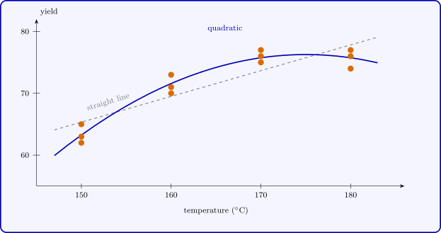

3.7 A quantitative factor: the regression model
When the factor is quantitative, such as a temperature, a dose or a concentration, with levels \(x_1 < x_2 < \dots < x_t\), the treatment means can be modelled as a smooth function of \(x\). The analysis of variance treats the levels as unordered labels and ignores this structure; a regression model uses it, \[ y_{ij} = \beta _0 + \beta _1x_i + \beta _2x_i^2 + \dots + \beta _kx_i^k + \varepsilon _{ij} , \] which predicts the response between the levels used and summarises the effect of \(x\) in a few parameters.
A polynomial of degree \(t - 1\) can pass through any \(t\) points, so with \(k = t - 1\) the fitted values are exactly the treatment means and the regression sum of squares equals \(SS_{\mathrm {Treatments}}\). A model of lower degree fits the means only approximately, and the question is whether the approximation is adequate. The replication provides an answer.
Theorem 3.7.1 (Lack of fit). Fit a regression model with \(p < t\) parameters to data with \(t\) distinct levels of \(x\) and \(n_i\) observations at level \(x_i\), and let \(\hat y_i\) be the fitted value at \(x_i\). Then the residual sum of squares splits as \[ \underbrace {\sum _i\sum _j(y_{ij} - \hat y_i)^2}_{SS_{\mathrm {Res}}} = \underbrace {\sum _i\sum _j(y_{ij} - \bar y_{i\cdot })^2}_{SS_{\mathrm {PE}}} + \underbrace {\sum _in_i(\bar y_{i\cdot } - \hat y_i)^2}_{SS_{\mathrm {LOF}}} , \] with \(N - t\) and \(t - p\) degrees of freedom. If the regression model is correct and the errors are normal, \[ F_0 = \frac {SS_{\mathrm {LOF}}/(t - p)}{SS_{\mathrm {PE}}/(N - t)} \sim F_{t-p,\,N-t} . \]
Proof. Write \(y_{ij} - \hat y_i = (y_{ij} - \bar y_{i\cdot }) + (\bar y_{i\cdot } - \hat y_i)\). The second term does not depend on \(j\) and the first sums to zero over \(j\), so the cross term vanishes. For the distribution, let \(H_R\) be the projection onto the regression space (spanned by the columns \(1, x, \dots , x^{p-1}\) evaluated at each observation) and \(H\) the projection onto the treatment space of the one-way model. Every column of the regression model is constant within a treatment, so the regression space lies inside the treatment space and \(HH_R = H_RH = H_R\). Then \(SS_{\mathrm {PE}} = \mathbf Y^\top (I - H)\mathbf Y\) and \(SS_{\mathrm {LOF}} = \mathbf Y^\top (H - H_R)\mathbf Y\), with symmetric idempotent matrices of ranks \(N - t\) and \(t - p\) whose product is zero. If the model is correct, \(\boldsymbol \mu \) lies in the regression space and \((H - H_R)\boldsymbol \mu = \mathbf 0\), so both quadratic forms are central, and Theorem 3.1.4 gives the result. □
\(SS_{\mathrm {PE}}\) is called the pure error sum of squares: it is the one-way \(SSE\), and it estimates \(\sigma ^2\) whether or not the regression model is right. \(SS_{\mathrm {LOF}}\) measures how far the treatment means lie from the fitted curve. A large \(F_0\) says the model is inadequate.
Example 3.7.2. The yield of a process was measured three times at each of four temperatures, in random order:
| temperature (\(^\circ \)C) | yield | \(\bar y_{i\cdot }\) | ||
| \(150\) | \(62\) | \(65\) | \(63\) | \(63.33\) |
| \(160\) | \(71\) | \(73\) | \(70\) | \(71.33\) |
| \(170\) | \(75\) | \(77\) | \(76\) | \(76.00\) |
| \(180\) | \(76\) | \(74\) | \(77\) | \(75.67\) |
The one-way analysis gives \(SST = 328.92\), \(SS_{\mathrm {Treatments}} = 312.92\) and \(SSE = SS_{\mathrm {PE}} = 16.00\) on \(8\) degrees of freedom, so \(MS_{\mathrm {PE}} = 2.00\).
A straight line has regression sum of squares \(260.42\), leaving \(SS_{\mathrm {Res}} = 68.50\), so \(SS_{\mathrm {LOF}} = 68.50 - 16.00 = 52.50\) on \(4 - 2 = 2\) degrees of freedom and \[ F_0 = \frac {52.50/2}{2.00} = 13.13 > F_{0.05,2,8} = 4.46 \qquad (p = 0.003) . \] The straight line is inadequate: the means rise and then level off. Adding \(x^2\) raises the regression sum of squares to \(312.50\), so \(SS_{\mathrm {LOF}} = 16.42 - 16.00 = 0.42\) on \(1\) degree of freedom, and \(F_0 = 0.42/2.00 = 0.21\) (\(p = 0.66\)): the quadratic fits. In the coded variable \(u = (x - 165)/10\) it is \[ \hat y = 74.19 + 4.17u - 2.08u^2 , \] which is greatest at \(u = 4.17/(2 \times 2.08) = 1\), that is at \(175\,^\circ \)C, a temperature that was never run. The analysis of variance could only have said that the four means differ; the regression model says how, and where to look next.

Questions on this section
Stuck on something here? Ask below and it stays attached to this topic.